<style>
  :root { --ink:#111827; --muted:#5b6472; --line:#e5e7eb; --soft:#f5f6f8; --accent:#2f5bea; --ok:#15803d; --okbg:#ecfdf3; --warn:#b45309; --warnbg:#fff7ed; --bad:#b91c1c; --badbg:#fef2f2; --next:#475569; --nextbg:#f1f5f9; }
  * { box-sizing:border-box; }
  @page { size:A4 landscape; margin:12mm 12mm 14mm; }
  html { -webkit-print-color-adjust:exact; print-color-adjust:exact; }
  body { margin:0; font-family:"Segoe UI", Arial, Helvetica, sans-serif; color:var(--ink); font-size:10.5pt; line-height:1.5; background:#fff; }
  .page { break-after:page; height:180mm; display:flex; flex-direction:column; }
  .page:last-child { break-after:auto; }
  .head { display:flex; align-items:baseline; justify-content:space-between; gap:12px; border-bottom:1px solid var(--line); padding-bottom:6px; margin-bottom:10px; }
  .head h2 { font-size:16pt; margin:0; letter-spacing:-.01em; display:flex; align-items:center; gap:10px; }
  .head .n { display:inline-flex; width:28px; height:28px; border-radius:50%; background:var(--accent); color:#fff; font-size:11pt; align-items:center; justify-content:center; font-weight:700; }
  .head .tag { font-size:8.5pt; text-transform:uppercase; letter-spacing:.1em; font-weight:700; padding:3px 10px; border-radius:999px; }
  .tag.solved { background:var(--okbg); color:var(--ok); } .tag.partly { background:var(--warnbg); color:var(--warn); } .tag.info { background:var(--nextbg); color:var(--next); }
  .two { display:grid; grid-template-columns:1fr 1.15fr; gap:18px; flex:1; min-height:0; align-items:start; }
  .story { display:flex; flex-direction:column; gap:10px; }
  .box { border-radius:10px; padding:10px 14px; border:1px solid var(--line); }
  .box h3 { margin:0 0 4px; font-size:10pt; text-transform:uppercase; letter-spacing:.08em; }
  .box p, .box ul { margin:0; font-size:10.5pt; }
  .box ul { padding-left:18px; } .box li { margin:0 0 3px; }
  .box.problem { background:var(--badbg); border-color:#fecaca; } .box.problem h3 { color:var(--bad); }
  .box.fix { background:#eff4ff; border-color:#c7d7fe; } .box.fix h3 { color:var(--accent); }
  .box.result { background:var(--okbg); border-color:#bbf7d0; } .box.result h3 { color:var(--ok); }
  .shots { display:flex; flex-direction:column; gap:10px; min-height:0; }
  figure { margin:0; } figcaption { font-size:8.8pt; color:var(--muted); margin-top:3px; }
  .shots img, .grid img, .wide img { display:block; max-width:100%; border:1px solid var(--line); border-radius:8px; box-shadow:0 6px 20px -14px rgba(0,0,0,.35); object-fit:contain; }
  .grid { display:grid; grid-template-columns:1fr 1fr; gap:12px 16px; flex:1; min-height:0; }
  .grid figure { display:flex; flex-direction:column; min-height:0; }
  .grid img { max-height:62mm; }
  .label { display:inline-block; font-size:8pt; font-weight:800; letter-spacing:.08em; text-transform:uppercase; padding:1px 8px; border-radius:999px; margin-bottom:3px; }
  .label.before { background:var(--badbg); color:var(--bad); } .label.after { background:var(--okbg); color:var(--ok); }
  /* cover */
  .cover { justify-content:center; }
  .cover h1 { font-size:32pt; margin:0 0 4px; letter-spacing:-.02em; }
  .cover .sub { font-size:14pt; color:var(--muted); margin:0 0 18px; }
  .lead { font-size:13pt; background:var(--soft); border-left:5px solid var(--accent); padding:14px 18px; border-radius:8px; margin:0 0 20px; max-width:240mm; }
  .score { display:grid; grid-template-columns:repeat(4, 1fr); gap:12px; max-width:240mm; }
  .score div { border:1px solid var(--line); border-radius:12px; padding:12px 14px; }
  .score b { display:block; font-size:24pt; line-height:1.1; }
  .score span { color:var(--muted); font-size:10pt; }
  .score .g b { color:var(--ok); } .score .a b { color:var(--accent); } .score .w b { color:var(--warn); }
  .meta { color:var(--muted); font-size:9.5pt; margin-top:20px; }
  /* win */
  .steps { list-style:none; margin:0; padding:0; display:flex; flex-direction:column; gap:7px; }
  .steps li { display:flex; gap:10px; align-items:flex-start; font-size:10.8pt; }
  .steps li i { flex:0 0 auto; display:inline-flex; width:20px; height:20px; border-radius:50%; background:var(--ok); color:#fff; font-style:normal; font-size:10pt; font-weight:800; align-items:center; justify-content:center; margin-top:1px; }
  .steps li.wait i { background:var(--warn); }
  .steps small { color:var(--muted); display:block; font-size:9.3pt; }
  table { width:100%; border-collapse:collapse; font-size:10pt; }
  th, td { text-align:left; padding:7px 9px; border-bottom:1px solid var(--line); vertical-align:top; }
  th { font-size:8.4pt; text-transform:uppercase; letter-spacing:.06em; color:var(--muted); background:var(--soft); }
  .pill { display:inline-block; font-size:8.6pt; font-weight:700; padding:2px 9px; border-radius:999px; white-space:nowrap; }
  .done { background:var(--okbg); color:var(--ok); } .prog { background:var(--warnbg); color:var(--warn); } .nxt { background:var(--nextbg); color:var(--next); }
  .feat { display:grid; grid-template-columns:1fr 1.5fr 1fr; align-items:start; gap:12px 16px; flex:1; min-height:0; }
  .feat figure { display:flex; flex-direction:column; }
  .feat img { display:block; width:100%; height:auto; max-height:100mm; object-fit:contain; background:#f5f6f8; border:1px solid var(--line); border-radius:8px; }
  .feat b { font-size:10.5pt; margin-top:5px; } .feat span { font-size:9.3pt; color:var(--muted); }
</style>

<!-- Cover -->
<section class="page cover">
  <h1>ThemeBot — the bumps in the road, and how we got past them</h1>
  <p class="sub">Challenges &amp; fixes · 24 September 2026</p>
  <div class="lead"><b>The headline:</b> ThemeBot has now created a brand-new Shopify store on its own, connected to it, passed a live test edit and started building the theme from the ECO ELI website. No card, no manual steps. Getting there meant clearing several real obstacles. This report shows each one: what went wrong, what we did, and where it stands now.</div>
  <div class="score">
    <div class="g"><b>6</b><span>obstacles hit</span></div>
    <div class="g"><b>6</b><span>solved (5 fully proven, 1 fix in place)</span></div>
    <div class="a"><b>≈10 sec</b><span>to create a new Shopify store automatically</span></div>
    <div class="w"><b>1</b><span>build to re-run so we can finish the ECO ELI theme</span></div>
  </div>
  <p class="meta">Every picture in this report is a real screen from the app or from Shopify, captured while the work was happening.</p>
</section>

<!-- The win -->
<section class="page">
  <div class="head"><h2><span class="n">★</span> Where we are now: the automatic setup works</h2><span class="tag solved">Proven on ECO ELI</span></div>
  <div class="two">
    <div class="story">
      <ul class="steps">
        <li><i>✓</i><div><b>Sign in to Shopify once</b><small>In ThemeBot's own browser window. After that it remembers.</small></div></li>
        <li><i>✓</i><div><b>Brand-new store created in about 10 seconds</b><small>The payment screen is skipped automatically. ThemeBot never enters card details.</small></div></li>
        <li><i>✓</i><div><b>Connection to the store set up</b><small>ThemeBot creates its own secure connection and saves the keys, encrypted.</small></div></li>
        <li><i>✓</i><div><b>Live test edit passed</b><small>Proof that ThemeBot is really allowed to change the store's theme.</small></div></li>
        <li><i>✓</i><div><b>Store named properly</b><small>"ECO ELI", not Shopify's default "My Store".</small></div></li>
        <li><i>✓</i><div><b>Theme build started</b><small>ThemeBot wrote 100+ theme files: header, footer, pages, sections.</small></div></li>
        <li class="wait"><i>↻</i><div><b>Build to be re-run</b><small>It was stopped early by an over-cautious timer (see obstacle 5). That is fixed; the next run picks up where it left off.</small></div></li>
      </ul>
    </div>
    <div class="shots">
      <figure>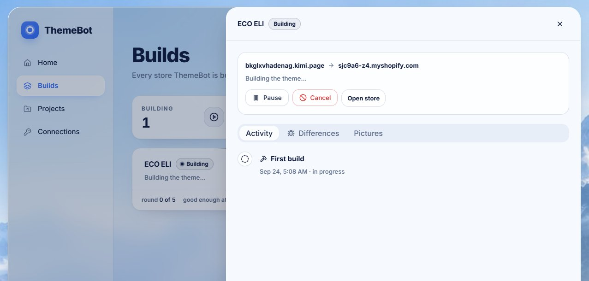<figcaption>The ECO ELI store being built inside ThemeBot.</figcaption></figure>
    </div>
  </div>
</section>

<!-- 1 -->
<section class="page">
  <div class="head"><h2><span class="n">1</span> The AI assistant was blocked by a safety check</h2><span class="tag solved">Solved</span></div>
  <div class="two">
    <div class="story">
      <div class="box problem"><h3>What went wrong</h3><p>The first version used an AI assistant to click through Shopify and fetch the store's secret connection keys. A built-in safety check saw an AI handling secret keys and stopped it before it did anything. Nothing was created and nothing was harmed, but the setup could not go ahead.</p></div>
      <div class="box fix"><h3>What we did</h3><p>We switched to a <b>fixed, step-by-step script</b> for the Shopify part. It does the same clicks every time, with no AI involved. That means it's:</p><ul><li>much faster: seconds instead of minutes;</li><li>free to run: no AI usage cost;</li><li>safer: no AI ever sees the secret keys.</li></ul><p>The AI version stays available as a backup button.</p></div>
      <div class="box result"><h3>Result</h3><p>The script set up the ECO ELI store and its connection end to end.</p></div>
    </div>
    <div class="shots"><figure>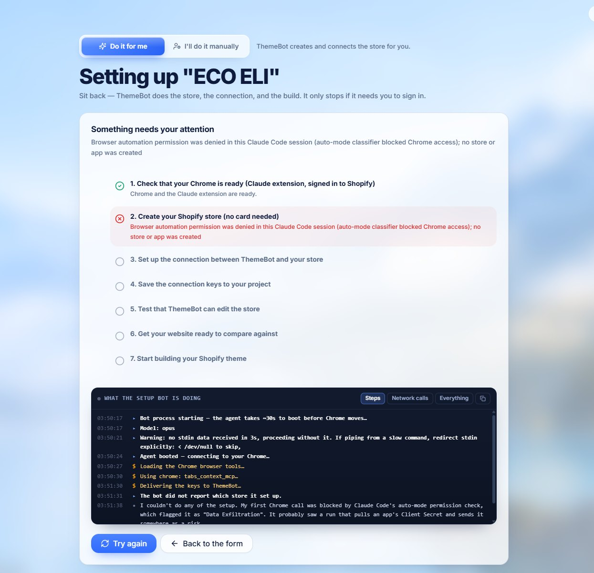<figcaption><span class="label before">Before</span> The setup stopped at step 2 because the AI assistant was blocked.</figcaption></figure></div>
  </div>
</section>

<!-- 2 -->
<section class="page">
  <div class="head"><h2><span class="n">2</span> Google refused to sign in inside the automated window</h2><span class="tag solved">Solved</span></div>
  <div class="two">
    <div class="story">
      <div class="box problem"><h3>What went wrong</h3><p>Google does not allow signing in inside a browser window that a program is controlling. It shows "This browser or app may not be secure", even for the account owner.</p></div>
      <div class="box fix"><h3>What we did</h3><p>The one-time sign-in now happens in a <b>normal browser window</b> that ThemeBot opens but does not control. You sign in the usual way (Google works), close the window, and ThemeBot reuses that saved sign-in. Your everyday Chrome stays open the whole time.</p></div>
      <div class="box result"><h3>Result</h3><p>Signed in once, and every run since has gone straight through.</p></div>
    </div>
    <div class="shots"><figure>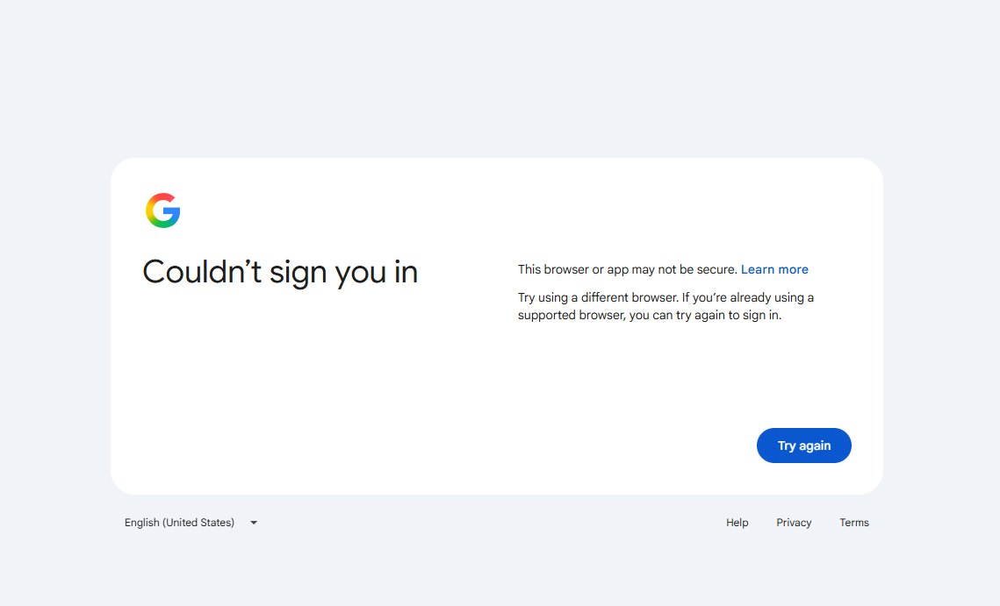<figcaption><span class="label before">Before</span> Google's refusal inside the automated window.</figcaption></figure></div>
  </div>
</section>

<!-- 3 -->
<section class="page">
  <div class="head"><h2><span class="n">3</span> Shopify had quietly changed its own pages</h2><span class="tag solved">Solved</span></div>
  <div class="two">
    <div class="story">
      <div class="box problem"><h3>What went wrong</h3><p>Shopify had renamed and moved things since the script was first written. "Create store" is now "Create new store". The "Create app" button works differently. The store-name setting moved to its own page. The script was looking for the old versions and stopped.</p></div>
      <div class="box fix"><h3>What we did</h3><p>We walked through Shopify's real pages together, one screen at a time, and updated the script to match. It now:</p><ul><li>goes straight to the right page instead of clicking through menus;</li><li>recognises the different wordings Shopify uses;</li><li>never touches any other store on the account.</li></ul></div>
      <div class="box result"><h3>Result</h3><p>Store created in about 10 seconds, and the connection app created and installed on the first try after the update.</p></div>
    </div>
    <div class="shots">
      <figure>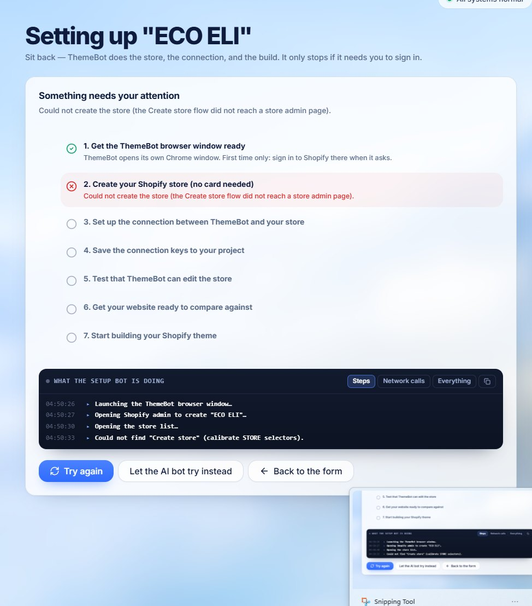<figcaption><span class="label before">Before</span> "Could not find Create store": Shopify had renamed the button.</figcaption></figure>
      <figure>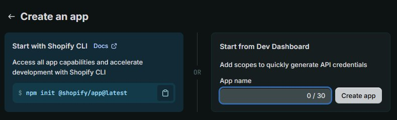<figcaption>Shopify's current "Create an app" page, which the script now handles.</figcaption></figure>
    </div>
  </div>
</section>

<!-- 4 -->
<section class="page">
  <div class="head"><h2><span class="n">4</span> The new store kept Shopify's default name, "My Store"</h2><span class="tag solved">Solved</span></div>
  <div class="two">
    <div class="story">
      <div class="box problem"><h3>What went wrong</h3><p>Shopify names every new store "My Store". ThemeBot tried to rename it, but the setting had moved (see obstacle 3), so the new store kept the default name.</p></div>
      <div class="box fix"><h3>What we did</h3><p>We found the store-name page, pointed ThemeBot straight at it, and renamed the ECO ELI store.</p></div>
      <div class="box result"><h3>Result</h3><p>The store is now called <b>ECO ELI</b>. Every future store gets its proper name automatically.</p></div>
    </div>
    <div class="shots"><figure>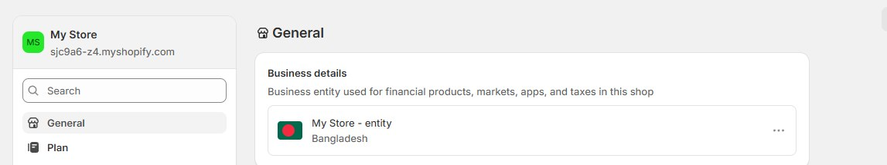<figcaption><span class="label before">Before</span> The new store still showed "My Store". It has since been renamed to ECO ELI.</figcaption></figure></div>
  </div>
</section>

<!-- 5 -->
<section class="page">
  <div class="head"><h2><span class="n">5</span> A long build was stopped as "stuck" while it was actually working</h2><span class="tag partly">Fix in place, confirming on next run</span></div>
  <div class="two">
    <div class="story">
      <div class="box problem"><h3>What went wrong</h3><p>ThemeBot has a safety timer that stops a build if it shows no sign of life for 20 minutes. The build works quietly and only reported progress at the very end, so after 20 minutes the timer stopped it, even though it had already written over 100 theme files.</p></div>
      <div class="box fix"><h3>What we did</h3><ul><li>Builds now <b>report every step as they go</b>, so the timer can see they are alive.</li><li>A new <b>Live activity</b> panel, with an on/off switch, shows exactly what the build is doing: every file it writes and every step it takes.</li></ul></div>
      <div class="box result"><h3>Result</h3><p>The fix is in place. The ECO ELI build will be re-run to finish, and it continues from the files already written.</p></div>
    </div>
    <div class="shots"><figure>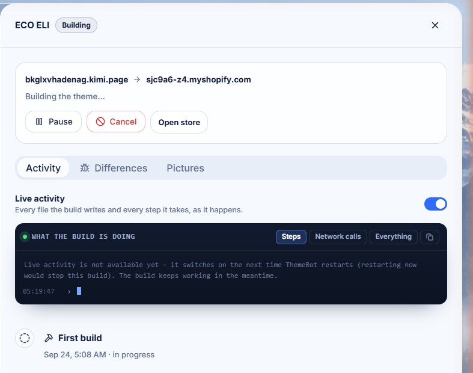<figcaption>The new Live activity switch in the build panel.</figcaption></figure></div>
  </div>
</section>

<!-- 6 -->
<section class="page">
  <div class="head"><h2><span class="n">6</span> Look and feel problems found in review</h2><span class="tag solved">All fixed</span></div>
  <div class="grid">
    <figure><span class="label before">Before</span>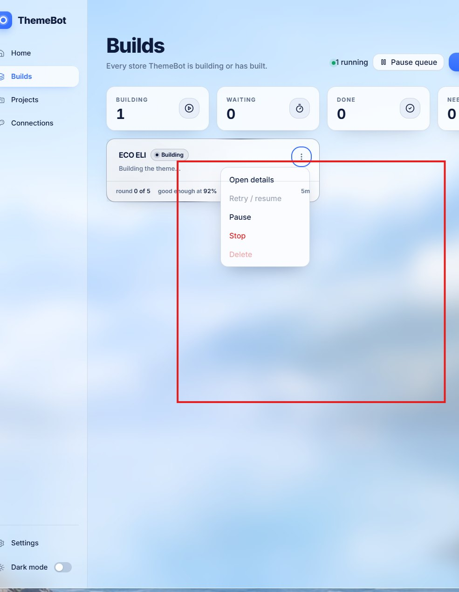<figcaption>The card's menu let the text behind it show through. Now it is solid and on top.</figcaption></figure>
    <figure><span class="label before">Before</span>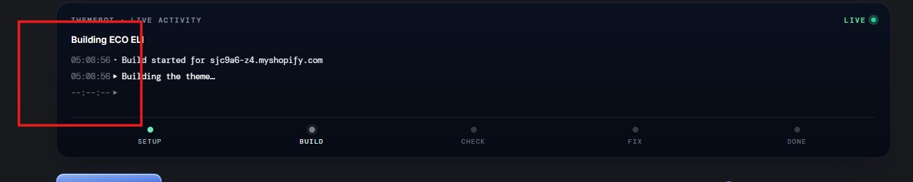<figcaption>The activity text was too faint to read. Now it has clear contrast.</figcaption></figure>
    <figure><span class="label before">Before</span>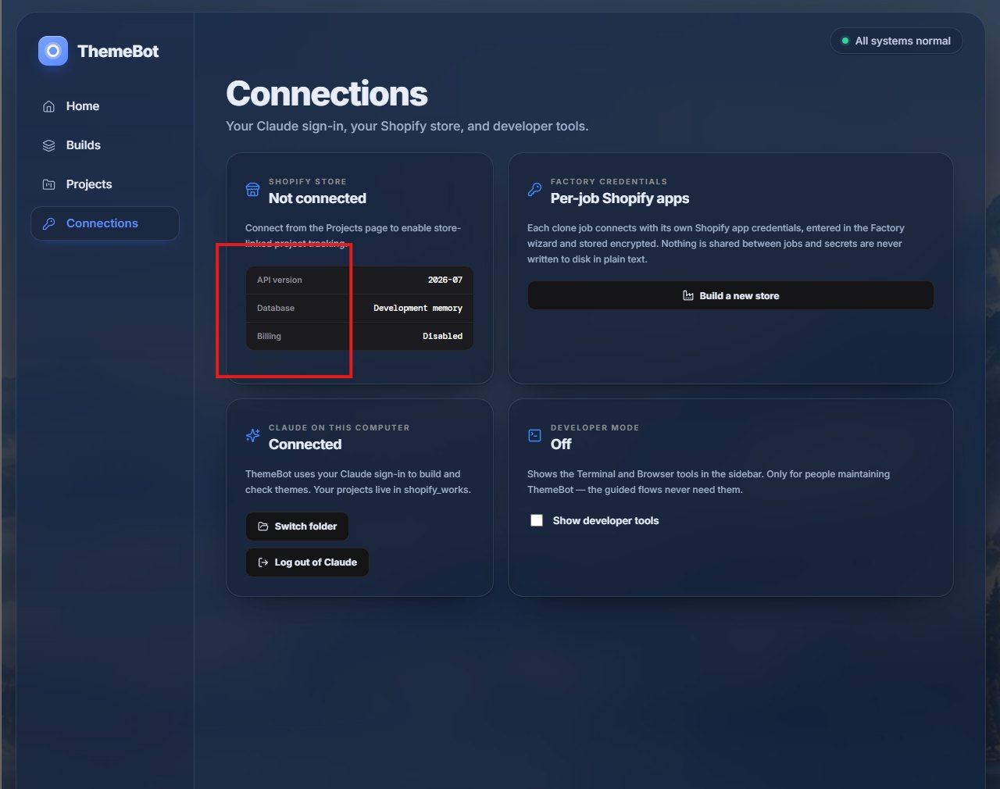<figcaption>Dark mode was a see-through navy with unreadable boxes and black buttons.</figcaption></figure>
    <figure><span class="label after">After</span>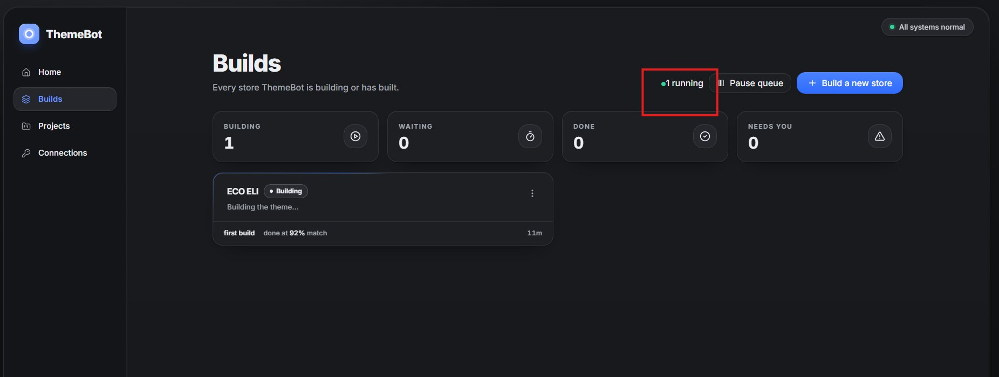<figcaption>Dark mode is now a solid, calm graphite with clear cards and buttons.</figcaption></figure>
  </div>
</section>

<!-- New things -->
<section class="page">
  <div class="head"><h2><span class="n">+</span> Improvements added along the way</h2><span class="tag info">New</span></div>
  <div class="feat">
    <figure>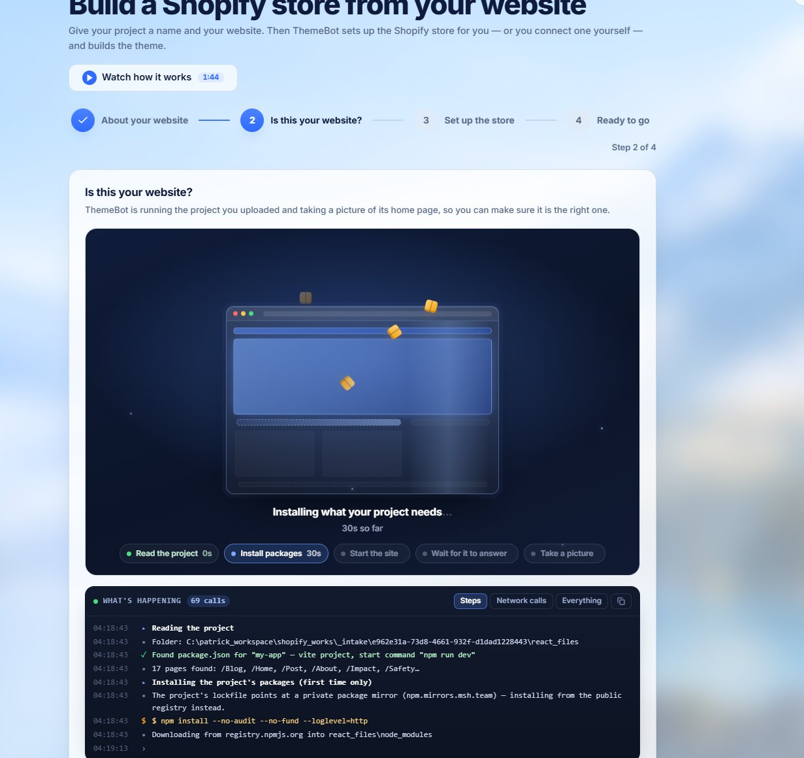<b>A clear "working" screen</b><span>While ThemeBot checks the website, an animation shows the page being assembled, each stage and how long it took. There's an optional mini-game for slow steps.</span></figure>
    <figure>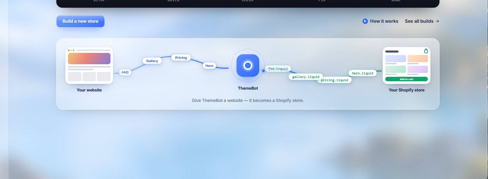<b>A friendlier Home screen</b><span>Shows at a glance how a website becomes a Shopify store. Small lights move along the lines while a build runs.</span></figure>
    <figure><b>Live activity, on or off</b><span>Watch a build work in real time, with every file and every step, or switch it off.</span></figure>
  </div>
</section>

<!-- Next -->
<section class="page">
  <div class="head"><h2><span class="n">→</span> What happens next</h2><span class="tag info">Plan</span></div>
  <table>
    <tr><th style="width:42%">Item</th><th style="width:14%">Status</th><th>Notes</th></tr>
    <tr><td>Re-run the ECO ELI build to completion</td><td><span class="pill nxt">Next</span></td><td>Continues from the 100+ files already written, now with live progress.</td></tr>
    <tr><td>"Time remaining" estimate during builds</td><td><span class="pill prog">In progress</span></td><td>Based on real progress: sections built versus sections planned. ECO ELI plans 15 pages and 118 sections.</td></tr>
    <tr><td>Remove spare test stores created while fixing the setup</td><td><span class="pill nxt">Next</span></td><td>Housekeeping on the Shopify account. The ECO ELI store stays.</td></tr>
    <tr><td>Automatic store setup (sign-in, store, connection, test)</td><td><span class="pill done">Done</span></td><td>Proven end to end on ECO ELI.</td></tr>
    <tr><td>Look and feel fixes and new screens</td><td><span class="pill done">Done</span></td><td>Menus, dark mode, readability, Home illustration, working screen, mini-game.</td></tr>
  </table>
  <div class="lead" style="margin-top:18px"><b>Bottom line:</b> the hardest part, getting a brand-new Shopify store set up and connected without anyone touching it, now works. What remains is finishing the first full theme build and adding the finishing touches.</div>
</section>
